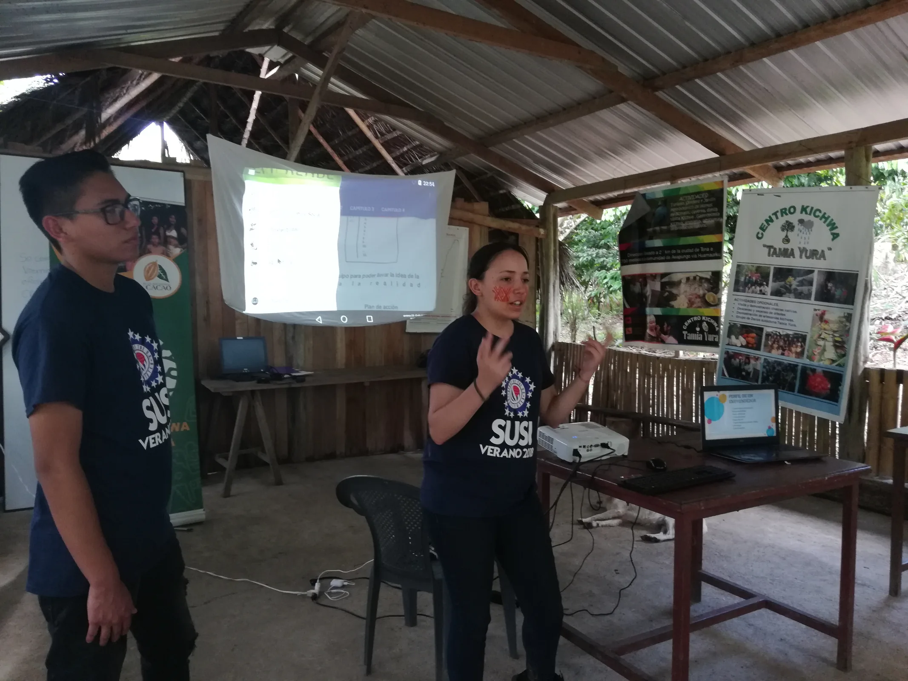
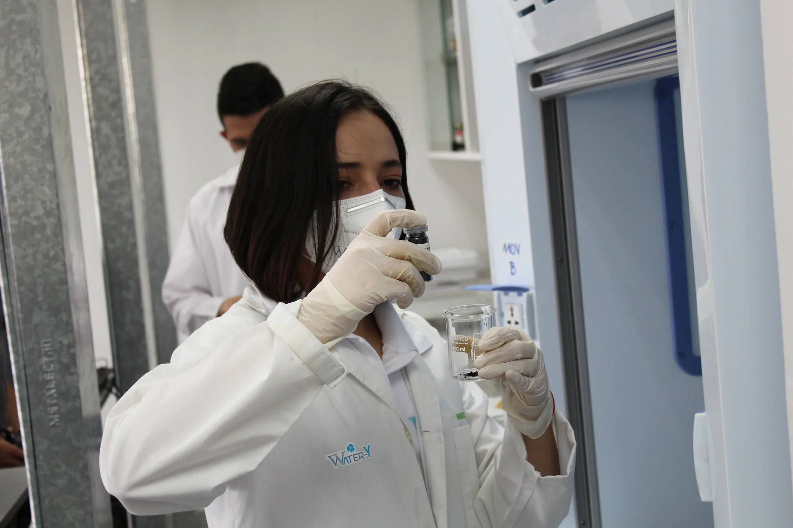

A family of
curious people.
Scientists, community leaders, educators, builders, artists, managers, and volunteers connected by the belief that knowledge should improve the conditions of life.

Science is a public practice.
Our mission is to harness science, education, and technology to create sustainable solutions that empower communities, protect the environment, and drive social equity.
We work at the intersection of environmental conservation, scientific research and technological innovation, inclusive education, and community-based development.
A future where science is an engine for change.
We protect the Amazon’s geological and biological heritage, promote scientific innovation in Indigenous communities, create sustainable economic alternatives through community-driven activity, and provide science-focused educational programs for future leaders in research, technology, and innovation.
Domenica Garzon
Theoretical Physicist · Inventor · Explorer
Born in Quito, Ecuador, Domenica Garzon has dedicated her life to bridging science and community to protect vulnerable ecosystems. She studied physics at Yachay Tech University, later continuing her work at the University of Illinois at Urbana-Champaign, the Max Planck Institute for Astronomy, and the Perimeter Institute for Theoretical Physics.
Her work spans gravity and condensed matter physics. In response to the 2016 earthquake in Ecuador, she co-founded Water-Y, developing an innovative nanomaterial to extract clean water from air humidity. Through Rikuna, she has led interdisciplinary expeditions into the Amazon, including the discovery of Ecuador’s first mosasaur fossil.

Different skills.
One direction.
Leadership and collaborators across science, education, communications, creative practice, finance, and project delivery.
Theoretical physicist, inventor, explorer, and founder of Rikuna and Water-Y.
Mathematician and co-founder of Water-Y. His work focuses on applied mathematics, partial differential equations, dynamical systems, finite-difference methods, and AI-assisted predictive modeling.
Ecuadorian electronics and networks engineer, inclusion advocate, and writer working for vulnerable communities and a healthier, more informed society.
Legal support for the Institute’s programs, partnerships, and organizational work.
Visual artist, brand developer, content creator, animal rescuer, and collaborator with communities in the Ecuadorian Amazon. Art with purpose.
Business Administration Technologist and accountant with 24 years of experience, supporting people and communities through empathy, knowledge, and teamwork.
Volunteer support across project activities and community-facing work.
Process engineer from Quito with a passion for science, social impact, sustainability, and projects that transform lives.
Built through
relationship.
We believe meaningful impact is a collective practice. The Institute’s work is supported by the following organizations and communities.
Curiosity travels.
The Institute’s broader research interests include detailed dynamical models of prion proliferation incorporating treatments such as antibodies and interferons—another example of rigorous science asking practical questions about life.
Read the wider story ↗